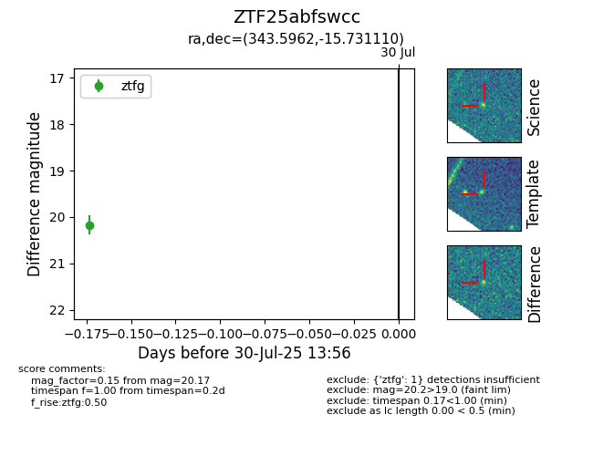

Target ZTF25abfswcc at 2025-07-30 13:56, see:
FINK: fink-portal.org/ZTF25abfswcc
Lasair: lasair-ztf.lsst.ac.uk/objects/ZTF25abfswcc
ALeRCE: alerce.online/object/ZTF25abfswcc
alt names
ZTF25abfswcc (ztf,fink)
coordinates:
equatorial (ra, dec) = (343.5962,-15.73111)
galactic (l, b) = (49.6806,-60.57011)
photometry
last ztfg=20.17
1 ztfg detections
